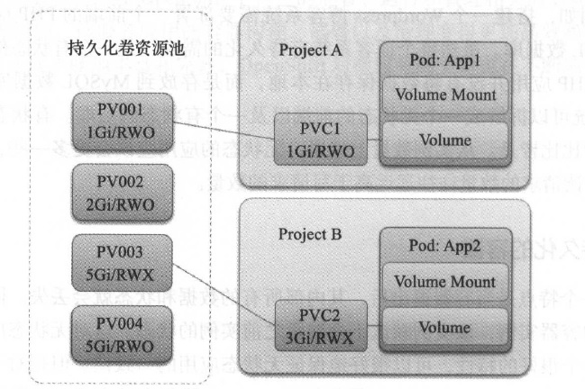
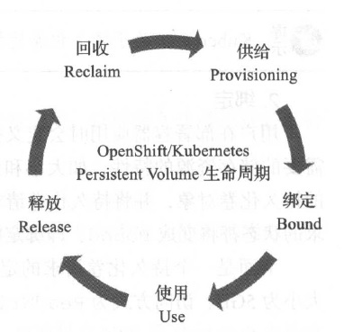

8. 应用数据持久化¶
8.1. 无状态应用与有状态应用¶
应用的有状态和无状态是根据应用是否有持久化保存数据的需求而言的，即持久化保存数据的应用为有状态的应用，反之则为元状态的应用。常见的系统往往是有状态的应用，比如对于微博和微信这类应用，所有用户发布的内容和留言都是要保存记录的。但是一个系统往往是由众多微服务或更小的应用模块构成的。有的微服务或模块其实并没有数据持久化的需求。例如，搭建一个Wordpress 博客系统需要部署一个前端的PHP 应用，以及一个后端的MySQL 数据库。虽然整个博客系统有持久化的需求，是一个有状态的系统，但是其子模块前端PHP 应用并没有将数据保存在本地，而是存放到MySQL 数据库中。所以一个Wordpress 系统可以拆解成一个无状态的前端以及一个有状态的后端。有状态和无状态的应用在现实当中比比皆是。从实例数量上来说，无状态的应用应该会更多一些，因为对大多数的系统而言，读请求的数量往往远远高于写请求的数量。
8.1.1. 非持久化的窑器¶
容器的一个特点是当容器退出后，其内部所有的数据和状态就会丢失。同样的镜像再次启动一个新的容器实例，该实例默认不会继承之前实例的状态。这对无状态应用来说不是问题，相反是一个很好的特性，可以很好地保证无状态应用的一致性。但是对于有状态的应用来说则是很大的障碍。试想一下，如果你的MySQL 容器每次重启后，之前所有的数据都丢失了，那将会是怎样一种灾难！
8.1.2. 容器数据持久化¶
不可避免地用户会在容器中运行有状态的应用，因此，在容器引擎的层面必须满足数据持久化的需求。Docker 在容器引擎的层面提供了卷（ Volume ）的概念。用户可以建立数据卷容器来为容器提供持久化的支持。容器实例需要将持久化的数据写人数据卷容器中保存。当应用容器退出时，数据仍然安然地在储存于数据卷容器当中。
此外Docker 以插件的形式支持多种存储方式。通过卷插件（ Volume Plugin），目前Docker容器可以对接主机的目录、软件定义存储（如GlusterFS 及Ceph ）、云存储（如AWS 及GCE等公有云提供的云储存）及储存管理解决方案（如Flocker 等） 。
Note
详细的Docker Volume Plugin 列表请参考： https://docs.docker.com/engine/extend/legacy_plugins/#volume-plugins 。
8.2. 持久化卷与持久化卷请求¶
Docker 在容器引擎的层面提供了卷的机制来满足容器数据持久化的需求。在多主机的环境下，容器云的场景中需要考虑的细节会更多。比如一个有状态应用的容器实例从一个主机漂移到另一台主机上时，如何保证其所挂载的卷仍然可以被正确对接。此外， 在云平台上，用户需要以一种简单方式获取和消费存储这一资源，而无须过度关心底层的实现细节。比如用户有一个应用，需要一个lOOGB 的高速存储空间储存大量的零碎文件。用户需要做的是向云平台提交资源申请，然后获取并消费这个储存资掘，而不需要操心底层这个存储究竟是具体来自哪一台储存服务器的哪一块磁盘。
图8-1 持久化卷和持久化卷生命周期
为了满足容器用户在云环境储存的需求。Kubernetes 在容器编排的层面提供了持久化卷( Persistent Volume, PV ）及持久化卷请求（ Persistent Volume Claim, PVC ）的概念。持久化卷定义了具体的储存的连接信息，如NFS 服务器的地址和端口、卷的位置、卷的大小及访问方式。在OpenShift中，集群管理员会定义一系列的持久化卷，形成一个持久化卷的资源池。当用户部署有持久化需求的容器应用时，用户需要创建一个持久化卷请求。在这个请求中，用户申明所需储存的大小及访问方式。Kubernetes 将负责根据用户的持久化卷请求找到匹配需求的持久化卷进行对接。最终的结果是容器启动后，持久化卷定义的后端储存将会被挂载到容器的指定目录。OpenShift在架构上基于Kubernetes ，因此用户可以在OpenShift中使用Kubernetes 的持久化卷与持久化卷请求的储存供给模型，以满足数据持久化的需求。
持久化卷的生命周期
图8-2 所示的持久化卷的生命周期一共分为“供给”，“绑定”，“使用”，“回收”及“释放”五个阶段。
图8-2 持久化卷请求模型
1 . 供给
在Kubernetes 中，储存资源的供给分为两种类型：静态供给和动态供给。对于静态供给， 集群管理员会创建一些列的持久化卷，形成一个持久化卷的资源池。动态供给是集群所在的基础设施云根据需求动态地创建出持久化卷，如OpenStack 、Amazon WebService 。这些资源池中的持久化卷将会在后续与具体的持久化卷请求进行对接。下面是一个持久化卷的定义示例，其定义了一个NFS 的存储后端，其大小为lGB ，访问方式为ReadWriteOnce ，即独占读写。
{
"apiVersion": "v1",
"kind":"PersistentVolume" ,
"metadata" :{
"name" ： "1Gi"
},
"spec": {
"capacity": {
"storage": "1Gi"
},
"accessModes": ["ReadWriteOnce"],
"nfs": {
"path": "/var/export/pvs/${volume}",
"server":"192.168.0.254"
},
"persistentVolumeReclaimPolicy"："Retain"
}
}
访问方式是描述持久化卷的访问特性，比如是只读还是可读可写。是只能被一个Node节点挂载，还是可以被多个Node 节点使用。目前有三种访问方式可供选择。
ReadWriteOnce ：可读可写，只能被一个Node 节点挂载。
ReadWriteMany ：可读可写，可以被多个Node 节点挂载。
ReadOnlyMany ：只读，能被多个Node 节点挂载。
这里要注意的是，访问方式和后端使用的储存有很大的关系，并不是将一个持久化卷设置为ReadWriteMany ，这个持久化卷就可以被多个Node 节点挂载。比如OpenStack 的Cinder和CephRDB 这些块设备就不支持ReadWriteMany 这种模式。在Kubernetes 的官方文档中对各种后端存储的访问方式有详细的描述。
Note
Kubernetes 关于持久化卷的描述： https://kubernetes.io/docs/concepts/storage/persistent-volumes/
绑定
用户在部署容器应用时会定义持久化卷请求持久化卷请求。用户在持久化卷请求中声明需要的储存资源的特性，如大小和访问方式。Kubernetes 负责在持久化卷的资源池中寻找配的持久化卷对象，并将持久化卷请求与目标持久化卷进行对接。这时持久化卷和持久化卷请求的状态都将变成Bound ，即绑定状态。
下面是一个持久化卷请求的定义示例。在这个例子中，用户定义了一个名为claim1 、大小为5GB 、访问方式为ReadWriteOnce 的持久化卷请求。
{
"apiVersion":"v1",
"kind":"PersistentVolumeClaim",
"apiVersion"："vl",
"metadata":{
"name":"claim1"
},
"spec":{
"accessModes":[
"ReadWriteOnce"
],
"resources":{
"requests":{
"storage" :"5Gi"
}
}
}
}
使用
在用户部署容器时会在Deployment Config 的容器定义中指定Volume 的挂载点，并将这个挂载点和持久化卷请求关联。当容器启动时，持久化卷指定的后端储存被挂载到容器定义的挂载点上。应用在容器内部运行，数据通过挂载点最终写入后端储存中，从而实现持久化。下面是一个容器定义的例子。可以看到这个容器定义的名为www 的volumeMounts 挂载点指向/var/www/html 目录。同时， www 这个挂载点指向了持久化卷请求claim1 。
spec:
containers:
- nane: webserver
image : httpd
volumeMounts :
- mountPath :"/var/www/html"
name: www
volumes :
- name : www
persistentVolumeClaim:
claimName : claim1
释放
当应用下线不再使用储存时，可以删除相关的持久化卷请求，这样持久化卷的状态就会变成released ， 即释放。
回收
当持久化卷的状态变为released 后， Kubernetes 将根据持久化卷定义的回收策略回收持久化卷。当前支持的回收策略有三种：
Retian ：保留数据，人工回收持久化卷。
Recycle ： 通过执行m -rf 删除卷上的所有数据。目前只有NFS 及Host Path 支持这种方式。
Delete ：动态地删除后端储存。该模式需要下层IaaS 的支持，目前AWS EBS 、GCEPD 及OpenStack Cinder 支持这种模式。
Kubernetes 通过持久化卷及持久化卷请求这一供给模型为用户提供容器云上的储存消费的途径。在这个模型下，用户可以简单快速地构建出满足应用需要的容器云上的储存解决方案。在Kubernetes 1.3 中，持久化卷和持久化卷请求引入了标签的概念，这了给用户更大的灵活性。例如，我们可以为不同类型的持久化卷贴上不同的标签，如“SSD”，“RAID0”，“Ceph”，“深圳机房”或“美国机房”等。用户在持久化卷请求中可以定义相应地标签选择器，从而获取更精确匹配应用需求的后端持久化卷。
8.3. 持久化卷与储存¶
Kubernetes 的持久化卷支持的后端储存的类型很多，包括宿主机的本地目录（ Host Path ）、 网络文件系统（ NFS ）、OpenStack Cinder 分布式储存（如GlusterFS 、Ceph RBD 及CephFS) 及云储存（如AWS Elastic Block Store 或GCE Persistent Disk ） 等。一个常见的困惑是“我应该选择哪一种储存？”不同的储存后端有不同特性，并不存在一种满足所有场景的储存。用户应该根据当前容器应用的需求，选择满足需求的储存。
8.3.1. Host Path¶
Host Path 类型的储存是指容器挂载所在的计算机点主机上的目录。这种方式只适合用于以测试为目的的场景中。允许容器挂载主机目录引入了安全风险。依赖于某一节点上的数据也使得容器和某一计算节点产生了较强的绑定关系性，引入了单点失效的风险。
8.3.2. NFS¶
NFS 是一种常用的储存类型。NFS 已经存在了很长一段时间，在UNIX 和Linux 上被广泛应用，所有的Linux 系统管理员对它都不会感到陌生。因为系统支持比较广泛， NFS 目前是较为常见的持久化卷的储存后端。下面是NFS 持久化卷的一个示例。
apiVersion: v1
kind: PersistentVolume
metadata:
name: pv0001
spec:
capacity:
storage: 5Gi
accessModes:
- ReadWriteOnce
nfs :
path: /tmp
server: 172.17.0.2
persistentVolumeReclaimPolicy: Recycle
8.3.3. GlusterFS¶
GlusterFS 是一个开源的分布式文件系统。GlusterFS 具有很强的弹性扩展能力，用户可以在通用的计算机硬件上使用GlusterFS 构建出PB 级别的储存集群用于储存如视频、图片及资料等多种类型的数据。
GlusterFS 的主要特点是：
完全基于软件实现。完全不依赖于特定的主机、储存、网络硬件。
高度弹性扩展。用户可以构建储存的容量从GB 到PB 级的储存。
高可用。数据可以在储存集成中保留多个副本，防止单点失效。
兼容PO SIX 文件系统标准。基于标准，因此对上层应用进行改造。
支持多种不同种类的卷。如复制卷、分布式卷及条带卷，满足不同场景的需求。
Note
GlusterFS项目主页： https://www.gluster.org/ 。
在OpenShift 中使用GlusterFS ，首先需要创建一个端点（ Endpoint ），描述GlusterFS 的服务器所在的信息。例如：
apiVersion : v1
kind: Endpoints
metadata:
name: glusterfs-cluster
subsets:
- addresses:
- ip: 192.168.122 . 221
ports:
- port: 1
- addresses:
- ip: 192.168.122 . 222
ports:
- port : 1
建立Endpoint 后，再创建持久化卷，并引用前文定义的Endpoint 。例如：
apiVersion: v1
kind : PersistentVolume
metadata :
name : gluster-default-volume
spec:
capacity:
storage : 2Gi
accessModes:
- ReadWriteMany
glusterfs:
endpoints: glusterfs-cluster
path: myVol1
readOnly: false
persistentVolumeReclaimPolicy : Retain
8.3.4. Ceph¶
Ceph 是当前非常流行的开源分布式储存解决方案。和GlusterFS 类似， Ceph 也是一个完全基于软件实现的分布式储存。Ceph 的一个特点是，其原生提供了多种接口方式，如基于RESTful 的对象、块（ Block ）和文件系统。GlusterFS 和Ceph 都是非常优秀的分布式储存，很多人喜欢将它们进行比较。应该说GlusterFS 和Ceph 各有优劣，在伯仲之间，青菜萝卡各有所爱。
Note
Ceph项目主页： https://ceph.io/ 。
Kubernetes 的持久化卷支持两种方式挂载Ceph 储存：块设备（RBD）及文件系统（ CephFS ） 。目前， 由于Ceph 官方认为CephFS 尚未完全成熟以达到企业生产使用的标准，因此虽然Kubernetes 和OpenShift 的代码中已经存在CephFS 的支持，但是并不推荐在生产中使用。
在挂接Ceph 的块设备RBD 前，需要先创建一个Secret 对象储存访问Ceph 服务器所需 的密钥。例如：
apiVersion: v1
kind : Secret
metadata :
name : ceph-secret
data:
key: QVFBOFF2SlZheUJQRVJBQWgvS2cwTllaQUhPQno3akZwekxxdGc9PQ==
Ceph 持久化卷的定义示例如下。
apiVersion : vl
kind: PersistentVolume
metadata:
name: ceph-pv
spec:
capacity :
storage: 2Gi
accessModes :
- ReadWriteOnce
rbd:
monitors:
-192.168.122.133:6789
pool : rbd
image: ceph-image
user: admin
secretRef:
name: ceph-secret
fsType: ext4
readOnly: false
persistentVolumeReclaimPolicy: Recycle
8.3.5. OpenStack Cinder¶
Cinder 是OpenStack 块储存服务，负责为OpenStack 上的主机实例提供灵活的储存支持。对于运行在OpenStack 上的OpenShift集群，用户可以定义基于OpenStack Cinder 的持久化卷。Cinder 持久化卷的定义示例如下。volume ID 属性指向了管理员在Cinder 创建的数据卷的唯一标识。
apiVersion ："v1"
kind : "PersistentVolume"
metadata:
name :"pv0001"
spec :
capacity:
storage :"5Gi"
accessModes :
- "ReadWriteOnce"
cinder:
fsType : "ext3"
volumeID ："f37a03aa-6212-4c62-a805-9ce139fab18”
Note
在使用Cinder 持久化卷前， OpenShift必须通过配置与底层的OpenStack 整合。详细的配置方法请参考Open Shi仕的官方文档：https://docs.openshift.com/container-platform/4.5/welcome/index.html
8.4. 存储资源定向匹配¶
不同用户对储存的需求不尽相同，除了大小和访问方式外，可能还有对磁盘的速度、储存所在的数据中心等有特殊的要求。为了灵活满足储存需求和储存资源的对接， Kubernetes支持为持久化卷打上不同的标签（ Label ） ，在持久化卷请求侧则通过定义标签选择器来申明该持久化卷请求具体需要与什么样的持久化卷匹配。通过标签和标签选择器（ Selector ) ,Kubernetes为持久化卷与持久化卷请求实现了定向匹配。
8.4.1. 创建持久化卷¶
创建如下例子中的两个持久化卷pv000l 及pv0002 。这两个持久化卷具有相同的大小和访问方式， 且都没有任何标签。
[root@master ~]# oc get pv --show-labels
NAME CAPACITY ACCESSMODES STATUS CLAIM REASON AGE LABELS
pv0001 lGi RWO Availab 1m <none>
pv0002 lGi RWO Availab 1m <none>
8.4.2. 标记标签¶
通过oc label 命令为持久化卷pv0002 打上标签disktype=ssd 。
[root@master ~]# oc label pv pv0002 disktype=ssd
persistentvolume "pv0002" labeled
再次查看持久化卷的标签，可以看到pv0002 已经打上了disktype=ssd的标签。pv0001 仍然没有任何标签。
[root@master ~ ] # oc get pv --show-labels
NAME CAPACITY ACCESSMODES STATUS CLAIM REASON AGE LABELS
pv0001 lGi RWO Available 2m <none>
pv0002 lGi RWO Available 2m disktype=ssd
8.4.3. 创建持久化卷请求¶
创建一个带标签选择器的持久化卷请求。如下面的定义所示，这个持久化卷请求的储存空间大小为lGi ，访问方式是只读共享RWO 。标签选择器的类型为matchLabels ，定义值为”disktype”: ” ssd” ，即表示与该持久化卷请求匹配的持久化卷必须要带有”disktype”：”ssd”标签。
[root@master ~]# cat pvc0001.json
{
"kind":"PersistentVolumeClaim",
"apiVersion":"v1",
"metadata":{
"name" : "pvc0001",
"creationTimestamp": null
},
"spec":{
"accessModes":[
"ReadWriteOnce"
]
"selector":{
"matchLabels ":{
"disktype":"ssd"
}
},
"resources":{
"requests":{
"storage":"1Gi"
}
}
},
"status":{}
}
[root@master ~]# oc create -f pvc0001.json
persistentvolumeclaim "pv0001" created
8.4.4. 请求与资源定向匹配¶
持久化卷请求创建完后，查看持久化卷的状态，可以看到虽然pv0001 和pv0002 在空间大小和访问方式上都满足了pvc0001的要求，但是pvc0001 最终匹配上的是带有目标标签的pv0002 。
[root@master -]# oc get pv --show-labels
NAME CAPACITY ACCESSMODES STATUS CLAIM REASON AGE LABELS
pv0001 lGi RWO Available 13m <none>
pv0002 lGi RWO Bound microservices/pvc000l 13m disktype=ssd
8.4.5. 标签选择器¶
目前， 持久化卷请求支持两种标签选择器： matchLabels 及matchExpressions 。matchLabels 选择器可以精确匹配一个或多个标签。例如：
......
"selector":{
"matchLabels":{
"disktype"："ssd"
}
},
......
matchExpressions 选择器支持标签的模糊匹配。用户可以使用操作符In或者NotIn对标签的值进行模糊匹配。
.......
matchExpressions:
- {key: region , operator ：In, values: [shenzhen]}
- {key: evn , operator ：NotIn, values: [testing]}
......
8.5. 实战：持久化的镜像仓库¶
前面几章的示例中部署了不少有状态的应用，比如OpenShift的内部镜像仓库、Jenkins和MySQL 。但是我们并没有为这些应用服务配置持久化卷，这样的结果是如果容器一旦意外退出，那么在容器内部的所有镜像、配置和数据都将消失殆尽。本节将为OpenShift 的内部仓库Registry 组件添加一个持久化的后端，实践容器应用的持久化。
8.5.1. 检查挂载点¶
首先，以集群管理员的身份登录OpenShift。
[root@master ~]# oc login -u system:admin
切换到default 项目， 查看Registry 的容器状态。通过输出可以看到Registry组件的容器正在运行。
[root@master ~]# oc project default
Now using project "default" on server "https://192.168.172.167:8443".
[ root@master ~]# oc get pod
NAME READY STATUS RESTARTS AGE
docker-registry-1-blpar 1/1 Running 12 9d
ose-router-1-03uqr 1/1 Running 11 9d
通过oc volume 命令可以查看系统对象关于Volume 的相关定义。执行oc volumes命令查看Registry 组件的Deployment Config 关于Volume 的定义。可以看见Registry 组件的定义中已经创建了一个Volume Mounts 对象registry-storage ，这个挂载点指向了/registry 目录。当前这个Volume Mounts 使用的empty directory 的卷，即数据保存在计算节点上。我们需要做的就是给registry-storage 这个挂载，点挂上一个持久化后端。
[root@master ~]# oc volumes dc/docker-registry --all
deploymentconfigs/docker-registry
empty directory as registry-storage
mounted at /registry
8.5.2. 备份数据¶
在前面章节的示例中已经向Regist可推送过不少镜像，所以当前容器内的/registry目录下已经有不少镜像相关的文件。
[root@master ~]# oc rsh docker-registry-1-blpar 'du' '-sh' '/registry'
1.2G /registry
需要先备份这些文件。通过oc rsync 命令，可以将容器中某个目录的数据同步到宿主机上。
[root@master ~] # mkdir /root/backup
[root@master ~]# cd /root/backup/
[root@master backup]# oc rsync docker-registry-1-blpar:/registry
．输出忽略．
sent 13921 bytes received 1271378066 bytes 14870081.72 bytes/sec
total size is 1271108863 speedup is 1.00
Note
oc rsync是一个很方便实用的命令，它可以双向同步容器和宿主机上的文件。要使用这个命令，目标容器内部必须有rync或者tar 这两个应用中的一个。
8.5.3. 创建存储¶
为了方便实验，本例选用NFS 作为后端的储存。在实际的生产中使用GlusterFS 、Ceph或其他储存后端的配置过程和步骤也类似。
执行以下命令创建一个NFS 的共享目录。
[root@master backup]# mkdir - p /exports/pvOOOl
[root@master backup]# yum y install nfs-utils rpcbind
[root@master backup]# chown nfsnobody:nfsnobody /exports/ -R
[root@master backup]# echo "/exports/pv000l * (rw,sync,all _squash)">>/etc/exports
[root@master backup]# systemctl start rpcbind
[root@master backup]# exportfs -r
[root@master backup]# systemctl start nfs-server
为了测试方便，暂时先关闭SELinux 。
[root@master backup]# setenforce 0
测试挂载该NFS 共享目录，并尝试创建一个文件。
[root@master ~]# mount 192.168.172.167:/exports/pv0001 /mnt/
[root@master ~]# touch /mnt/test
[root@master ~]# ls /mnt
[root@master ~]# rm - f /mnt/test
[root@master -]# umount /mnt/
8.5.4. 创建持久化卷¶
根据上面创建的NFS 的信息，创建持久化卷。在实验主机上将如下JSON 保存成文件pv.json 。
{
"apiVersion": "v1",
"kind":"PersistentVolume" ,
"metadata" :{
"name" ： "pv0001"
},
"spec": {
"capacity": {
"storage": "5Gi"
},
"accessModes": ["ReadWriteOnce"],
"nfs": {
"path": "/export/pv0001",
"server":"192.168.172.167"
},
"persistentVolumeReclaimPolicy"："Retain"
}
}
执行oc create 创建持久化卷。
[root@master ~]# oc create -f pv.json
persistentvolume "pv0001" created
创建完毕后， 通过oc get pv 可以查看到刚创建成功的持久化卷，此时它的状态为Available ，即可用。
[root@master ~] # oc get pv
NAME CAPACITY ACCESSMODES STATUS CLAIM REASON AGE
pv0001 5Gi RWO Available 13s
8.5.5. 创建持久化卷请求¶
下面将创建持久化卷请求， 声明应用的储存需求。在实验主机上将如下JSON 保存成文件pvc.json 。这里声明了需要3 GB 的后端储存，访问方式为ReadWriteOnce 。
{
"apiVersion":"v1",
"kind":"PersistentVolumeClaim",
"apiVersion"："v1",
"metadata":{
"name":"docker-registry-claim"
},
"spec":{
"accessModes":[
"ReadWriteOnce"
],
"resources":{
"requests":{
"storage" :"3Gi"
}
}
}
}
执行oc create 创建持久化卷请求。
[root@master ~]# oc create -f pvc.json
persistentvolumeclaim "docker-registry-claim" created
查看持久化卷请求和持久化卷的状态，会发现系统已经将它们连接起来了。持久化卷和持久化卷请求的状态都已经变成Bound 。
[root@master ~]# oc get pvc
NAME STATUS VOLUME CAPACITY ACCESSMODES AGE
docker-registry-claim Bound pv0001 5Gi RWO 18s
[root@master ~]# oc get pv
NAME CAPACITY ACCESSMODES STATUS CLAIM REASON AGE
pv0001 5G RWO Bound default/docker-registry-claim 5m
8.5.6. 关联持久化卷请求¶
将备份的数据恢复到前文创建的NFS 目录中。
[root@master ~]# mv /root/backup/registry/* /exports/pv0001/
[root@master ~]# chown nfsnobody:nfsnobody /exports/ -R
此时，可以测试删除Registry容器， Replication Controller 将重新创建它。
[root@master ~]# oc delete pod docker-registry-1-blpar
pod "docker-registry-1-blpar" deleted
[root@master ~]# oc get pod
NAME READY STATUS RESTARTS AGE
docker-registry-1-48j36 0/1 ContainerCreating 0 3s
ose-router-1-03uqr 1/1 Running 11 9d
容器启动后，再次检查容器/registry 目录，会发现目录的数据应消失。因为容器默认是不持久化数据的。
[root@master ~]# oc rsh docker-registry-1-48j36 'du' '-sh' '/registry'
0 /registry
为Reigstry的容器定义添加持久化卷请求docker-registry-claim ，并与挂载点registry-storage 关联。
[root@master ~] # oc volume dc/docker-registry --add --name=registry-storage -t pvc --claim-name=docker-registry-claim --overwrite
deploymentconfigs/docker-registry
Deployment Config 的容器定义修改后， OpenShift 会创建新的容器实例。检查容器/registry 目录，会发现目录的数据恢复了。
[root@master ~]# oc rsh docker-registry-2-kmnfr 'du' '-sh' '/registry'
1. 2G /registry
至此，我们成功地将Registry 组件挂接上了持久化储存。本例的配置基于NFS 持久化卷实现，使用GlusterFS 或Ceph 持久化卷的过程也类似，只是持久化卷的定义需要稍做修改。
8.6. 本章小结¶
本章探索了持久化卷和持久化卷请求的使用。用户通过定义持久化卷请求声明应用储存的需求，系统自动对接资源池中的持久化卷，最终为容器挂载后端的储存。通过实验，为Registry 组件添加了持久化后端，通过这个例子读者已经掌握了为容器应用添加持久化储存的方法。